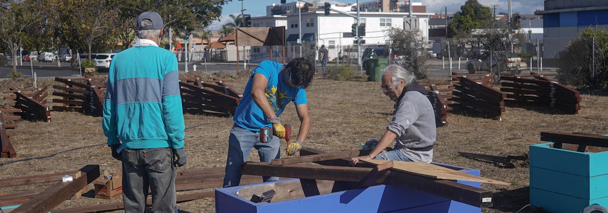

Community Partners
Tiny Village Spirit is grateful for the support of our community partners and sponsors. We are proud to work with these organizations to build a better future for our community.
Businesses
- Arup
- Blue Shield
- Burchell Nursery
- City of Richmond–Richmond Builds
- City of Richmond–YouthWorks
- Community Of Resource & Resolution (CORR)
- Jones Electrical Service Co.
- Moxion Power
- Pyatok and Associates Architects
- Red Oak Realty
- San Quentin Prison Shop Program
- TEF Design
Congregations & Faith-Based Groups
- Berkeley High School Jewish Student Union
- B’nai B’rith Youth Organization (BBYO)
- Church of Jesus Christ Latter Day Saints
- Church of Santa Maria–Orinda
- College Park HS Jewish Student Union
- Congregation Beth El
- Contra Costa Midrasha
- First Congregational Church of Berkeley
- Impact Builder
- Greater Richmond Interfaith Program
- Jewish Teen Foundation
- Mount Diablo Unitarian Universalist Church
- Pacifica Institute
- Repair the World
- Shepherd of the Hills Lutheran Church
- SE Portland Youth Collective
- Strawberry Creek Friends Meeting
- Unitarian Universalist Church of Berkeley
- United Synagogue Youth–East Bay
- Univ. of California, Berkeley–Hillel
Organizations
- Build It Green
- California Climate Action Corp
- Cal Habitat
- Girls Garage
- Hope Solutions
- Piedmont Community Service Crew
- Rainbow Community Center
- Rebuilding Together East Bay Network
- Richmond Chamber of Commerce
- Richmond Police Activities League
- Richmond Rescue Mission
- SE Portland Youth Collective
- SOS Richmond
Schools
- Kennedy High School
- Latitude High School
- Lick Wilmerding High School
- McClymonds High School
- Salesians High School
- Univ. of SF Architecture Program
- Urban School of San Francisco
3129 Ellis Street, Berkeley, CA 94703 | Tiny Village Spirit is registered as a 501(c)(3) non-profit organization. Tax ID/EIN: 99-2684195.
Copyright ©2023-2026 Tiny Village Spirit · All Rights Reserved · Made with ❤️ by Ronen Jain